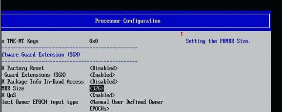

This guide shows the steps to setup SGX dependecies and software stack.
Prerequisites
Hardware: Xeon Family server later than IceLake (included), enabling PRMRR size large enough in the BIOS. Because different devices have different configuration locations in BIOS, the exact configuration path cannot be provided. But the entry is typically in the “Security” section, “Advance” section or “Processor Configuration” section which is configuration path we find.

If you’re using Xeon server later than Sapphire Rapids (included), it may needs more steps to enable SGX:
Change Volatile Memory Mode to 1LM: 1LM is required to enable TME:
Go to EDKII MENU -> Socket Configuration -> Memory Configuration -> Memory Map
Set Volatile Memory Mode to 1LM
Enable TME/MKTME: SGX requires TME
Go to EDKII MENU -> Socket Configuration -> Processor Configuration -> TME, TME-MT, TDX
Set Total Memory Encryption (TME) to Enabled
Enable Software Guard Extension (SGX):
Go to EDKII MENU -> Socket Configuration -> Processor Configuration -> Software Guard Extension (SGX) - set SW Guard Extension
Software: Ubuntu20.04 with kernel v5.13+, which is the lowest version the Kubernetes plugins supports.
• If the kernel needs to be upgraded and has installed sgx out-of-tree driver, please use
dkmsremove the sgx driver first and then upgrade the kernel, otherwise the panic throw by dkms will prevent the new kernel from being installed correctly. Run “dkms status” to find the older driver and run “dkms remove” to remove it.
SGX Software Stack
This guide based on Ubuntu 20.04
The Linux Intel(R) SGX software stack is comprised of the Intel(R) SGX driver, the Intel(R) SGX SDK, and the Intel(R) SGX Platform Software (PSW). The Intel(R) SGX SDK and Intel(R) SGX PSW are hosted in the linux-sgx project.
SGX driver: the SGX driver has been integrated into the kernel since v5.11, do not install again. In the references of the guideline, there are many redundant steps to install the driver and the sdk, do not follow those instructions.
SGX SDK:
Install dependencies:
$ sudo apt-get install build-essential pythonGet binary installer and install the sdk, in the process you need to specify the path to install. The latest version of SDK is encouraged to be used:
$ wget https://download.01.org/intel-sgx/sgx-linux/2.19/distro/ubuntu20.04-server/sgx_linux_x64_sdk_2.19.100.3.bin && chmod a+x sgx_linux_x64_sdk_2.19.100.3.bin && sgx_linux_x64_sdk_2.19.100.3.bin
SGX PSW:
Dependent libs:
$ echo 'deb [arch=amd64] https://download.01.org/intel-sgx/sgx_repo/ubuntu focal main' | sudo tee /etc/apt/sources.list.d/intel-sgx.list` $ wget -qO - https://download.01.org/intel-sgx/sgx_repo/ubuntu//intel-sgx-deb.key | sudo apt-key add $ sudo apt-get update
Include:
libsgx-enclave-common-dev, libsgx-dcap-ql-dev, libsgxdcap-default-qpl-dev
libsgx-launch, libsgx-urts, libsgx-epid, libsgx-quote-ex, libsgx-dcap-ql, libsgx-dcap-default-qpl
DCAP:
Intel(R) Software Guard Extensions (Intel(R) SGX) Data Center Attestation Primitives (Intel(R) SGX DCAP) provides SGX attestation support targeted for data centers, cloud services providers and enterprises. This attestation model leverages Elliptic Curve Digital Signature algorithm (ECDSA) versus the current client based SGX attestation model which is EPID based (Enhanced Privacy Identification).
Following https://github.com/intel/SGXDataCenterAttestationPrimitives/tree/DCAP_1.16/QuoteGeneration#for-linux-os to build and install the Intel(R) SGX DCAP Quote Generation Library and the Intel(R) SGX Default Quote Provider Library Packagequote generation projects.
PCCS:
This is a lightweight Provisioning Certificate Caching Service implemented in nodejs for reference. It retrieves PCK Certificates and other collaterals on-demand using the internet at runtime, and then caches them in local database. The PCCS exposes similar HTTPS interfaces as Intel(R)’s Provisioning Certificate Service.
Subscribe to the Intel(R) PCS in https://api.portal.trustedservices.intel.com/provisioning-certification and get two PCS API keys (either is available)
Install PCCS:
Install node.js
$ curl -sL https://deb.nodesource.com/setup_16.x | sudo -E bash - $ sudo apt-get install -y nodejs $ apt install sqlite3 python build-essential
Install
sgx-dcap-pccs:
$ apt install sgx-dcap-pccs
You need specify pccs configuration following the guide in https://www.intel.com/content/www/us/en/developer/articles/guide/intel-software-guard-extensions-data-center-attestation-primitives-quick-install-guide.html. And remember the user password.
Provision a system
$ apt install sgx-pck-id-retrieval-toolconfigure
/opt/intel/sgx-pck-id-retrieval-tool/network_setting.confPCCS_URL: refer to above PCCS URL
user_toke: refer to user password
proxy_type: if PCCS is on the same machine, set to
directUSE_SECURE_CERT: false if aiming to test
Register the system
$ PCKIDRetrievalToolThe output should be:
$ PCKIDRetrievalTool Intel(R) Software Guard Extensions PCK Cert ID Retrieval Tool Version 1.16.100.2 Registration status has been set to completed status. the data has been sent to cache server successfully and pckid_retrieval.csv has been generated successfully!
Install aesmd
$ apt-get install libsgx-urts libsgx-dcap-ql libsgx-dcap-default-qpl$ systemctl restart aesmd
Configure the quote provider library to connect to PCCS to obtain the attestation collateral
configure /etc/sgx_default_qcnl.conf
PCCS_URL: refer to the above pccs url
USE_SECURE_CERT: false; allow self-signed certification
Check:
Use the demo in https://github.com/intel/SGXDataCenterAttestationPrimitives/tree/master/SampleCode to check whether the installation is correct. If the demo throws the error code 0xe017, you may need to the no_proxy as
export no_proxy=localhost,127.0.0.1,::1
References:
https://download.01.org/intel-sgx/latest/dcap-latest/linux/docs/Intel_SGX_SW_Installation_Guide_for_Linux.pdf - User-mode software installation
https://www.intel.com/content/www/us/en/developer/articles/guide/intel-software-guard-extensions-data-center-attestation-primitives-quick-install-guide.html - PCCS installation
https://github.com/intel/SGXDataCenterAttestationPrimitives - Intel(R) Software Guard Extensions Data Center Attestation Primitives
https://github.com/intel/linux-sgx - Intel(R) Software Guard Extensions for Linux* OS